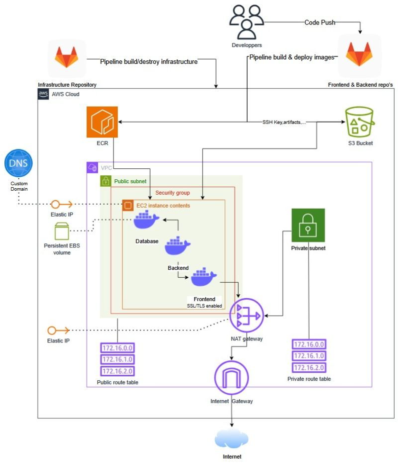

AWS/GITLAB app Hosting
Project 4.0

For this group project, My team and I had to build a weather application designed specifically for farmers. The app allowed them to register their crops, track weather conditions, and submit insurance claims in case of damage. Our team was made up of students from three different specializations: App Development, Artificial Intelligence, and Cloud & Cybersecurity. I was the only student representing the Cloud & Cybersecurity track.
My main responsibility was setting up the cloud infrastructure and ensuring the project was secure and automated. I created multiple GitLab repositories for the developers and implemented CI/CD pipelines that built Docker images of their code and deployed them automatically to AWS. This was all done using the AWS CLI directly inside the GitLab pipelines.
The infrastructure itself was also fully automated. From setting up VPCs, subnets, and EC2 instances, to configuring security groups and Elastic IPs, everything was handled through code. I even included manual triggers in the pipeline so we could choose when to run specific stages, for example, setup, testing, or cleanup.
I was also the one who made code changes to the developers' projects when needed to make sure everything worked smoothly together, especially when it came to container communication. To do that well, I kept an overview of what every team member was doing. I knew I needed a bird's-eye view of the whole system to make sure it all integrated properly, and I took that role seriously.
On top of that, I was also responsible for managing and submitting all project documentation. This meant making sure all our documents met the school’s formatting and content guidelines and were turned in on time.
In the end, the project was a success. The developers could focus on their part without worrying about infrastructure issues, and I learned a lot about cloud automation, teamwork, and cross-disciplinary collaboration.
My main responsibility was setting up the cloud infrastructure and ensuring the project was secure and automated. I created multiple GitLab repositories for the developers and implemented CI/CD pipelines that built Docker images of their code and deployed them automatically to AWS. This was all done using the AWS CLI directly inside the GitLab pipelines.
The infrastructure itself was also fully automated. From setting up VPCs, subnets, and EC2 instances, to configuring security groups and Elastic IPs, everything was handled through code. I even included manual triggers in the pipeline so we could choose when to run specific stages, for example, setup, testing, or cleanup.
I was also the one who made code changes to the developers' projects when needed to make sure everything worked smoothly together, especially when it came to container communication. To do that well, I kept an overview of what every team member was doing. I knew I needed a bird's-eye view of the whole system to make sure it all integrated properly, and I took that role seriously.
On top of that, I was also responsible for managing and submitting all project documentation. This meant making sure all our documents met the school’s formatting and content guidelines and were turned in on time.
In the end, the project was a success. The developers could focus on their part without worrying about infrastructure issues, and I learned a lot about cloud automation, teamwork, and cross-disciplinary collaboration.

What did i learn?
This project taught me what it really means to take ownership of infrastructure in a team setting. I didn’t just automate a few tasks, I built and managed the entire cloud environment from scratch, and I had to think several steps ahead to keep everything working together. It was the first time I truly experienced how valuable it is to approach infrastructure as code, and how much time and frustration that can save when done right.
I also learned how important it is to communicate clearly with teammates from different backgrounds. The developers weren’t always familiar with cloud tooling or containerization, so I had to explain certain decisions in a way that made sense to them. That pushed me to not only understand the technical side but also to improve how I present complex topics to others.
Something I didn’t expect going in was how often I had to troubleshoot problems that weren’t technically “mine.” But instead of saying “that’s not my responsibility,” I took initiative and made sure everything worked as one system, even if that meant diving into unfamiliar code. That mindset shift, from just doing my own part to actively owning the whole project’s stability, is probably the most valuable thing I took away from this experience.
I also learned how important it is to communicate clearly with teammates from different backgrounds. The developers weren’t always familiar with cloud tooling or containerization, so I had to explain certain decisions in a way that made sense to them. That pushed me to not only understand the technical side but also to improve how I present complex topics to others.
Something I didn’t expect going in was how often I had to troubleshoot problems that weren’t technically “mine.” But instead of saying “that’s not my responsibility,” I took initiative and made sure everything worked as one system, even if that meant diving into unfamiliar code. That mindset shift, from just doing my own part to actively owning the whole project’s stability, is probably the most valuable thing I took away from this experience.